Opentelemetry Instrumentation
В данном практическом занятии опробуем инструментирование приложения с помощью библиотек opentelemetry для языка golang.
Vagrant
Для работы будем использовать следующий Vagrantfile:
Vagrant.configure("2") do |config|
config.vm.define "otel" do |c|
c.vm.box = "ubuntu/lunar64"
c.vm.hostname = "otel"
c.vm.network "forwarded_port", guest: 8888, host: 8888
c.vm.provision "shell", inline: <<-SHELL
apt-get update -q
apt-get install -yq docker.io docker-compose-v2
usermod -a -G docker vagrant
SHELL
end
end
Данная конфигурация установит на виртуальную машину docker и docker compose, с помощью которых в дальнейшем будут развернуты остальные компоненты.
Collector
Развернем коллектор и компоненты для телеметрии при помощи docker-compose,
для этого зададим конфигурацию в файл config.yaml:
receivers:
otlp:
protocols:
grpc:
endpoint: 0.0.0.0:4317
processors:
batch:
exporters:
debug:
verbosity: detailed
otlp:
endpoint: jaeger:4317
tls:
insecure: true
prometheusremotewrite:
endpoint: http://prometheus:9090/api/v1/write
service:
pipelines:
logs:
receivers: [otlp]
processors: [batch]
exporters: [debug]
metrics:
receivers: [otlp]
processors: [batch]
exporters: [prometheusremotewrite,debug]
traces:
receivers: [otlp]
processors: [batch]
exporters: [otlp,debug]
И сам compose.yaml:
services:
otel-collector:
container_name: collector
image: otel/opentelemetry-collector-contrib:0.86.0
ports:
- 4317:4317
configs:
- source: collector
target: /etc/otelcol-contrib/config.yaml
prometheus:
container_name: prometheus
image: prom/prometheus:v2.50.1
command:
- --config.file=/etc/prometheus/prometheus.yml
- --storage.tsdb.path=/prometheus
- --web.enable-remote-write-receiver
ports:
- 9090:9090
jaeger:
container_name: jaeger
image: jaegertracing/all-in-one:1.56
ports:
- "16686:16686"
grafana:
container_name: grafana
image: grafana/grafana:10.4.0
ports:
- 8888:3000
configs:
collector:
file: ./config.yaml
После чего запустим:
$ docker compose up -d
[+] Running 5/5
✔ Network vagrant_default Created 0.0s
✔ Container collector Started 0.5s
✔ Container prometheus Started 0.5s
✔ Container jaeger Started 0.6s
✔ Container grafana Started 0.6s
Мы получим работающий коллектор с конфигурацией, отправляющей метрики и трейсы
в prometheus и jaeger соответственно, а также grafana, с помощью которой
сможем визуализировать информацию в них.
Application
Добавим приложение, которое будет обрабатывать http запросы и, используя
библиотеки opentelemetry, собирать метрики и трейсы, после чего отправлять их
в коллектор. Приложение взято из занятия по jaeger, дополненное метриками:
package main
import (
"context"
"fmt"
"io"
"log"
"math/rand"
"net/http"
"os"
"strings"
"time"
"go.opentelemetry.io/contrib/instrumentation/net/http/otelhttp"
"go.opentelemetry.io/otel"
"go.opentelemetry.io/otel/codes"
"go.opentelemetry.io/otel/exporters/otlp/otlpmetric/otlpmetricgrpc"
"go.opentelemetry.io/otel/exporters/otlp/otlptrace/otlptracegrpc"
"go.opentelemetry.io/otel/metric"
"go.opentelemetry.io/otel/propagation"
"go.opentelemetry.io/otel/sdk/resource"
sdktrace "go.opentelemetry.io/otel/sdk/trace"
sdkmetric "go.opentelemetry.io/otel/sdk/metric"
semconv "go.opentelemetry.io/otel/semconv/v1.24.0"
"go.opentelemetry.io/otel/trace"
"google.golang.org/grpc"
"google.golang.org/grpc/credentials/insecure"
)
func main() {
service := os.Getenv("NAME")
ctx := context.Background()
conn, err := grpc.NewClient("collector:4317",
grpc.WithTransportCredentials(insecure.NewCredentials()),
)
if err != nil {
log.Fatal("connect to collector", err)
}
tr, err := initTracer(ctx, conn, service)
if err != nil {
log.Fatal("init tracer", err)
}
_, err = initMeter(ctx, conn, service)
if err != nil {
log.Fatal("init meter", err)
}
http.Handle("/", newHandler(service, tr))
http.ListenAndServe(":8080", nil)
}
func initTracer(ctx context.Context, conn *grpc.ClientConn, svc string) (trace.Tracer, error) {
exp, err := otlptracegrpc.New(ctx, otlptracegrpc.WithGRPCConn(conn))
if err != nil {
return nil, err
}
res, err := resource.New(ctx,
resource.WithAttributes(
semconv.ServiceName(svc),
),
)
if err != nil {
return nil, err
}
prv := sdktrace.NewTracerProvider(
sdktrace.WithBatcher(exp),
sdktrace.WithResource(res),
)
otel.SetTracerProvider(prv)
otel.SetTextMapPropagator(propagation.NewCompositeTextMapPropagator(propagation.TraceContext{}, propagation.Baggage{}))
return prv.Tracer("tracer"), nil
}
func initMeter(ctx context.Context, conn *grpc.ClientConn, svc string) (metric.MeterProvider, error) {
exp, err := otlpmetricgrpc.New(ctx, otlpmetricgrpc.WithGRPCConn(conn))
if err != nil {
return nil, err
}
res, err := resource.New(ctx,
resource.WithAttributes(
semconv.ServiceName(svc),
),
)
if err != nil {
return nil, err
}
mp := sdkmetric.NewMeterProvider(
sdkmetric.WithResource(res),
sdkmetric.WithReader(sdkmetric.NewPeriodicReader(exp)),
)
otel.SetMeterProvider(mp)
return mp, nil
}
func sendReq(ctx context.Context, tr trace.Tracer, url string) error {
client := http.Client{Transport: otelhttp.NewTransport(http.DefaultTransport)}
req, err := http.NewRequestWithContext(ctx, http.MethodGet, url, nil)
if err != nil {
return err
}
resp, err := client.Do(req)
if err != nil {
return err
}
defer resp.Body.Close()
io.ReadAll(resp.Body)
if resp.StatusCode != http.StatusOK {
return fmt.Errorf("response code: %d", resp.StatusCode)
}
return nil
}
func newHandler(name string, tr trace.Tracer) http.Handler {
return otelhttp.NewHandler(http.HandlerFunc(func(w http.ResponseWriter, r *http.Request) {
ctx := r.Context()
log.Printf("request %s\n", r.URL.Path)
path := strings.Split(r.URL.Path, "/")
if len(path) > 1 && len(path[1]) > 0 {
log.Printf("send request to %s\n", path[1])
if err := sendReq(ctx, tr,
fmt.Sprintf(
"http://%s:8080/%s", path[1], strings.Join(path[2:], "/"),
)); err != nil {
log.Printf("send request error %s", err)
span := trace.SpanFromContext(ctx)
span.SetStatus(codes.Error, "error span")
span.RecordError(fmt.Errorf("error span"))
}
}
num := rand.Intn(5) + 1
time.Sleep(time.Duration(num) * time.Second)
if num%3 == 0 {
w.WriteHeader(http.StatusInternalServerError)
}
}), name)
}
Добавим его в compose.yaml:
services:
app1:
container_name: app1
image: app
build: .
environment:
- NAME=app1
ports:
- "8080:8080"
otel-collector:
container_name: collector
image: otel/opentelemetry-collector-contrib:0.86.0
ports:
- 4317:4317
configs:
- source: collector
target: /etc/otelcol-contrib/config.yaml
prometheus:
container_name: prometheus
image: prom/prometheus:v2.50.1
command:
- --config.file=/etc/prometheus/prometheus.yml
- --storage.tsdb.path=/prometheus
- --web.enable-remote-write-receiver
ports:
- 9090:9090
jaeger:
container_name: jaeger
image: jaegertracing/all-in-one:1.56
ports:
- "16686:16686"
grafana:
container_name: grafana
image: grafana/grafana:10.4.0
ports:
- 8888:3000
configs:
collector:
file: ./config.yaml
Запустим контейнер и цикл запросов, чтобы наше приложение начало отправлять метрики и трейсы в коллектор:
$ docker compose up -d
[+] Running 6/6
✔ Network vagrant_default Created 0.0s
✔ Container app1 Started 0.8s
✔ Container prometheus Started 0.5s
✔ Container collector Started 0.7s
✔ Container jaeger Started 0.7s
✔ Container grafana Started 0.8s
$ while :;do curl localhost:8080;done
Visualization
По адресу localhost:8888 доступен интерфейс
grafana. Авторизуемся под учетными данными admin:admin и перейдем в раздел
datasources.
Metrics
В нем добавим в качестве источника метрик prometheus:
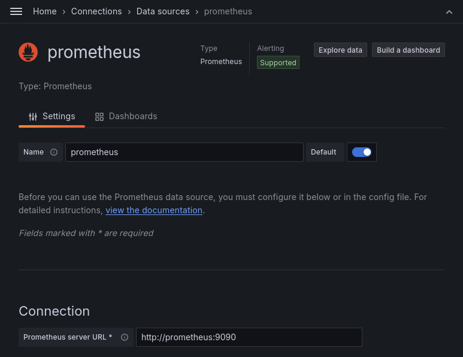
После чего нажмем кнопку Save & test и перейдем в Explore data. В данном
разделе можем сделать поиск по метрике http_server_duration_milliseconds_count,
чтобы убедиться, что метрики нашего приложения попадают в хранилище:
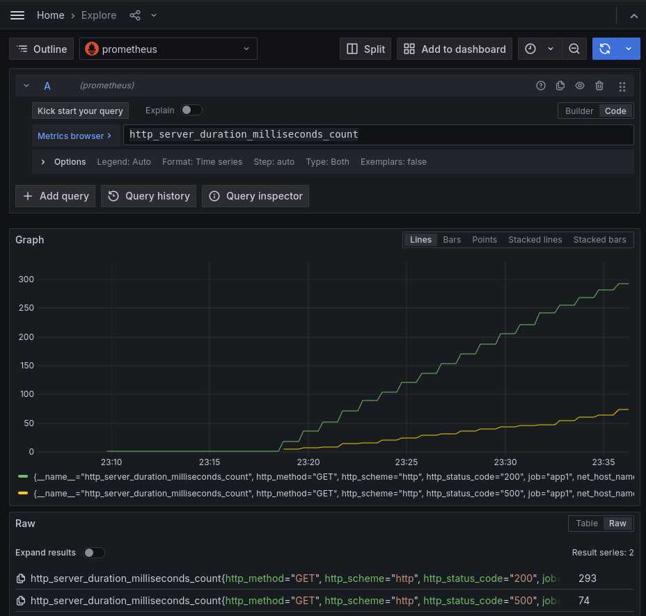
Как видно, метрики сервера автоматически сгенерированы библиотекой инструментирования opentelemetry при обработке http запросов.
Traces
Добавим еще один датасорс jaeger для трейсов:
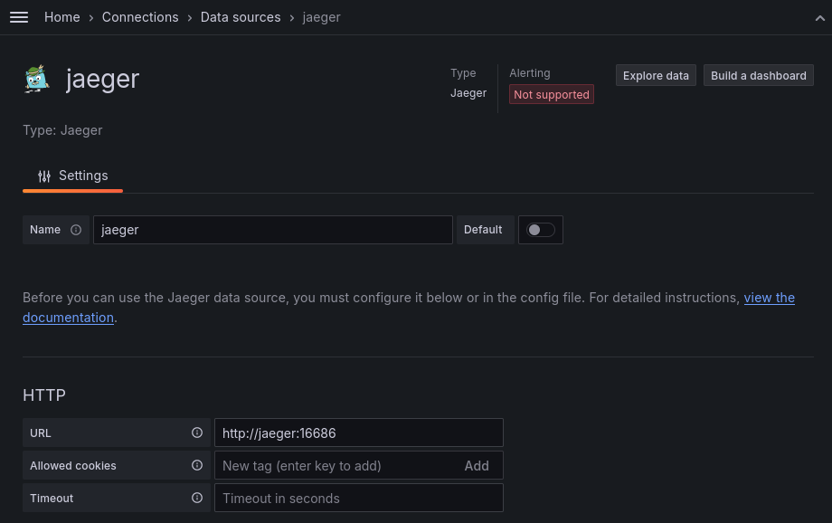
После сохранения также перейдем в Explore data, чтобы увидеть трейсы нашего
приложения:
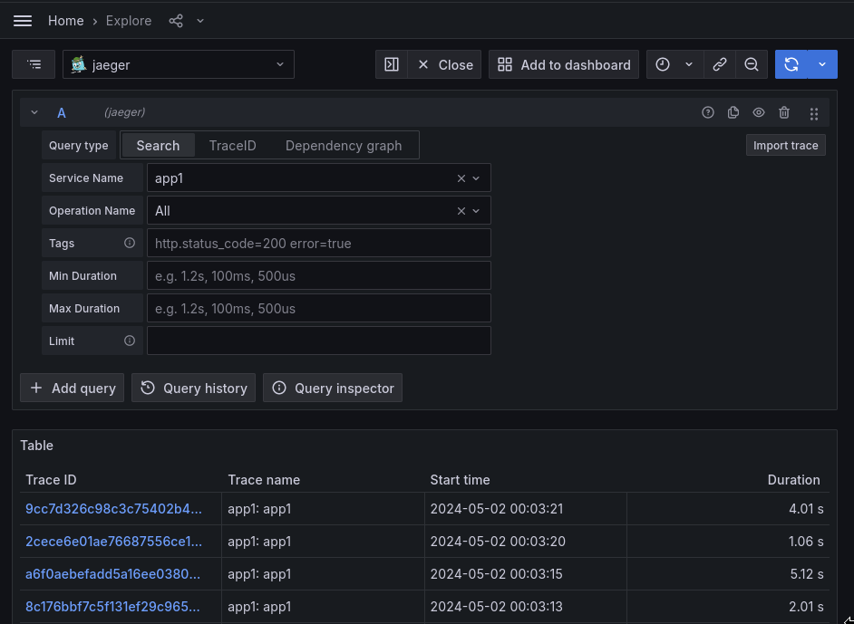
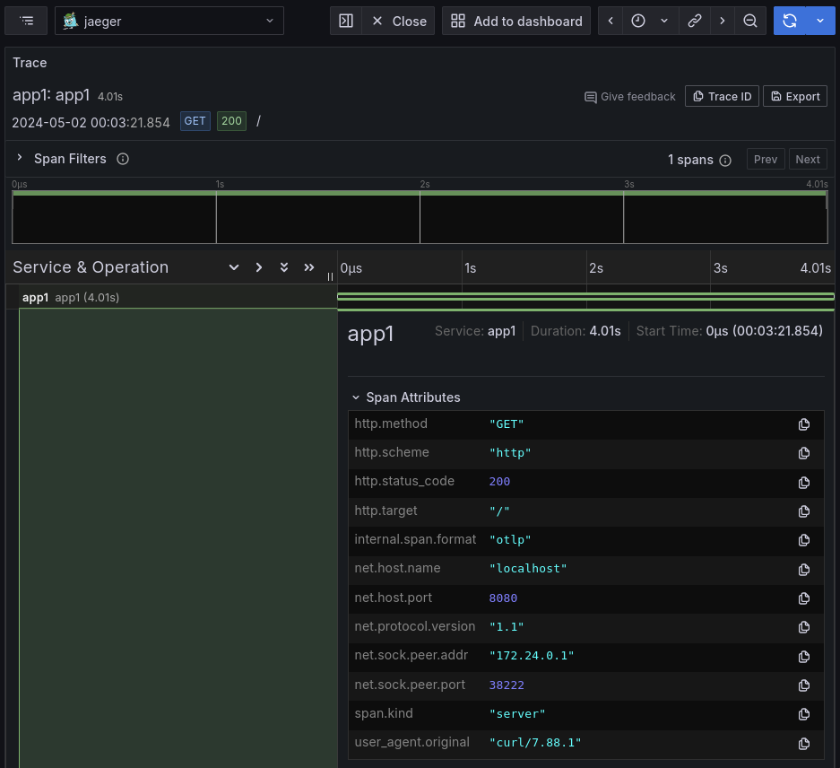
Как видно, библиотека инструментирования opentelemetry добавляет информацию о запросе в атрибуты спана.
Dashboard
Создадим новый дашборд в разделе dashboards.
Добавим в него переменную code для выбора http кода в метриках и трейсах:
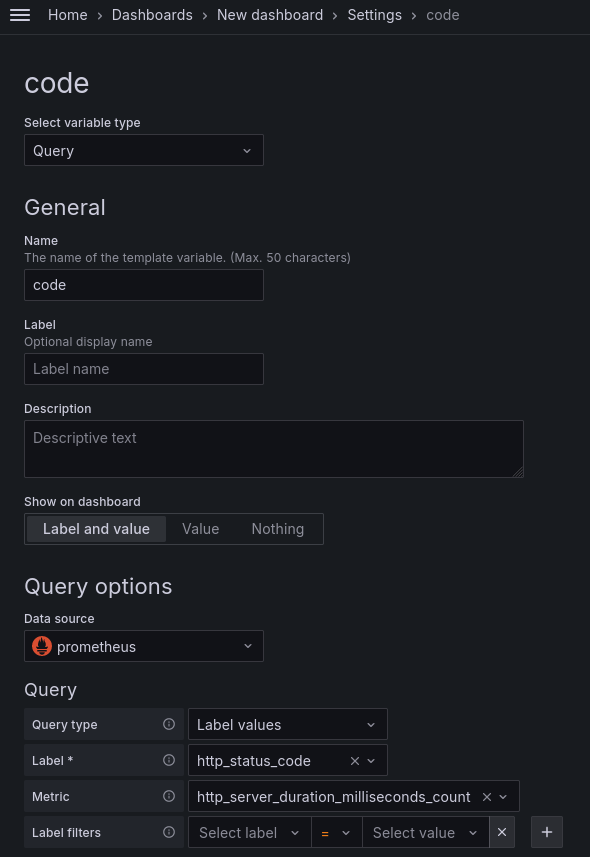
И добавим переменную для выбора traceid:
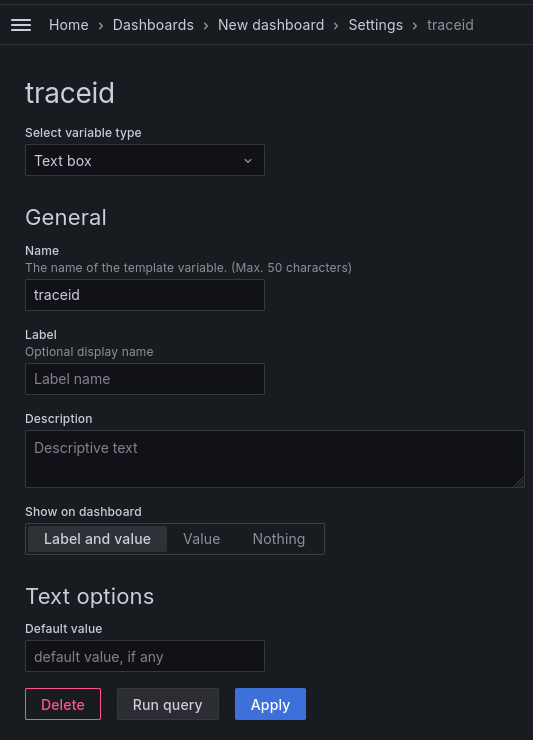
После чего добавим визуализацию для трейсов как ранее делали в практике по
jaeger, добавив переменную в теги:
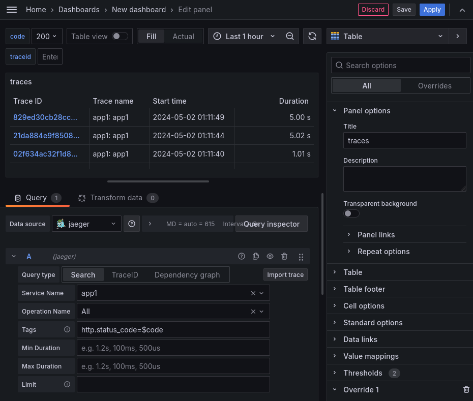
И также добавив override для выбора traceid:
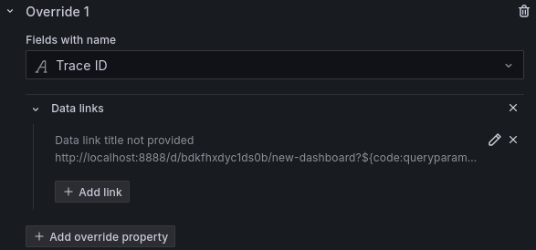
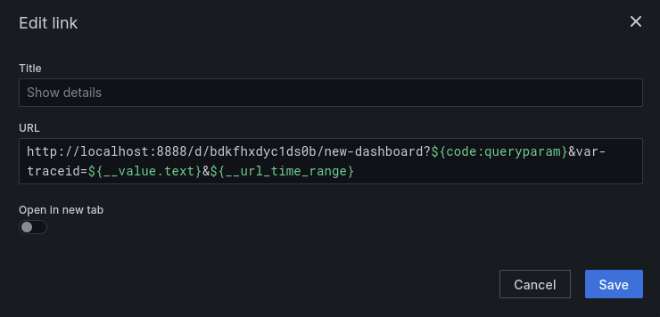
А также добавим визуализации с деталями по трейсу:
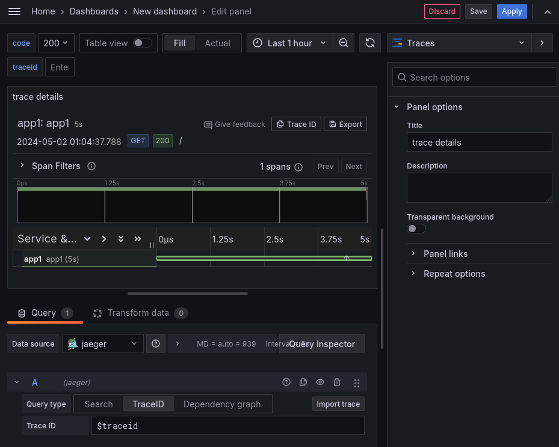
Добавим на дашборд метрики для отображения частоты запросов:
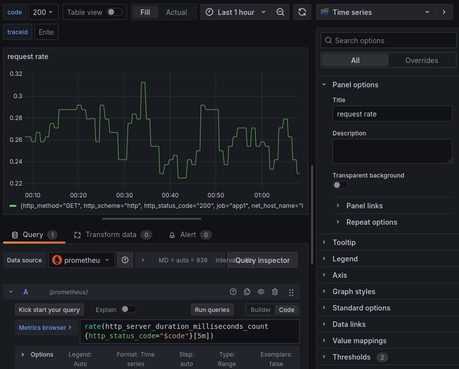
И среднее время запросов:
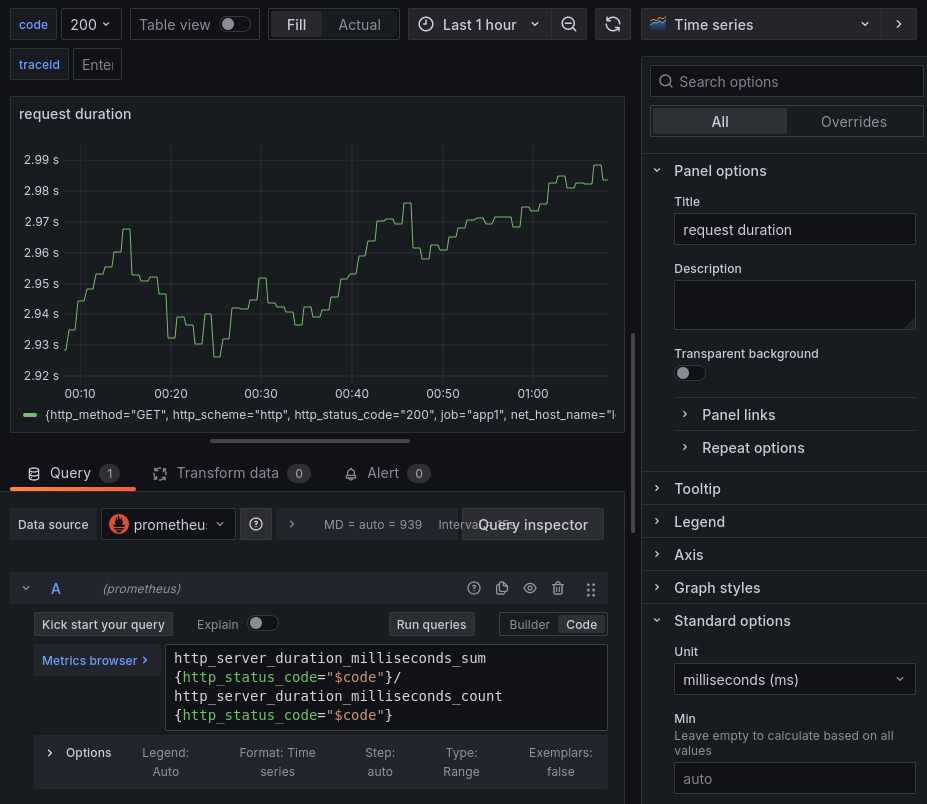
После чего с помощью переменных мы можем манипулировать данными в наших визуализациях для удобного анализа проблем в приложении:
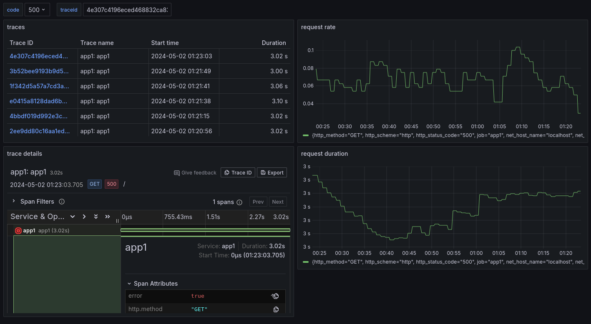